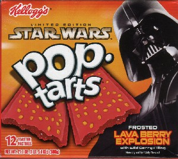

Posted By Amit on 4/18/2005 1:58:26 AM EST
Number of people currently in line: 0
The last few days have been full of adventure and excitement, with tickets going on sale Friday, and the midnight screening of Revenge of the Sith at the Ziegfeld Theatre selling out in a matter of hours. The tickets for NYLine members were set aside for us by our friends at Clearview Cinemas and now reside safely somewhere with us, perhaps tucked away in some astromech droid. But even though the premiere showing has sold out, we still have spaces available for new registrations! At this time we have roughly 100 slots open for new members to earn a ticket to the 12:01 show of Episode III at the Ziegfeld on May 19th, and help raise money and awareness for our fantastic charity, the Starlight Starbright Children's Foundation! Check out our shift schedule to see what it takes to be an NYLine member, I think you'll find that the commitment is not exactly Jedi-esque.
NYLine III looks to be the biggest and best Star Wars bash this side of the Sanctuary Moon of Endor. Among the many benefits awaiting NYLine members is a gift bag of items upon first signing in, that include fun products donated by some of our sponsors, and a neighborhood survival guide that we've created so you won't feel like you don't even know which planet you're on when you reach the line. Also, during EVERY shift, prizes will be handed out to line members (either contest winners, or just by picking a name out of some Darth Vader helmet).
One of the most recent and exciting additions to our growing list of sponsors is breakfast cereal giant, Kellogg's - makers of the extremely popular Star Wars tie in foods (and the UPC codes on their boxes that many are finding to be even more enticing). They will be providing us with boxes of Star Wars cereals and Lava Berry Explosion Pop Tarts for our Saturday Morning Funnies cartoon watching shifts, as well as other snack foods for the Outlander Club Party shifts. And that's just the tip of the iceberg! Keep checking back for more announcements on some of the amazing fun you can expect as an NYLine member.
If you haven't registered yet, sign up now! And if you are not able to join the party, please read about our connection with our beloved charity, the Starlight Starbright Children's Foundation - and please donate to our cause!
See you on the pavement!